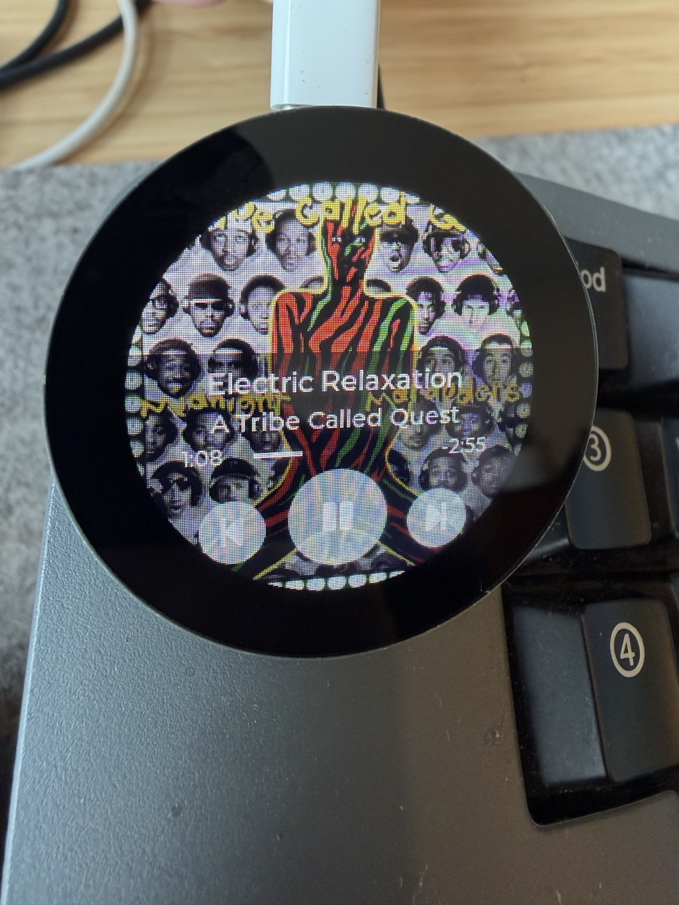

Now Playing Display
A macOS menu bar app that streams what you're playing (album art, track info, progress) to a USB-connected ESP32-C6 round display.

macOS 13+ Apple Silicon & Intel USB-CHardware
- Seeed XIAO ESP32-C6
- Seeed Round Display for XIAO (240×240 GC9A01A + CHSC6X touch)
- USB-C data cable (charge-only cables won't work)
3D-printed case
STLs are published on Thingiverse. The case snaps around the round-display board and exposes the USB-C port.
Setup
1. Flash the firmware
Download firmware.binPre-built firmware is a single merged image (flash to offset 0x0).
Easiest method: open the ESP web tool in Chrome (uses WebSerial), connect to the device, and flash firmware.bin at offset 0x0.
Or via the CLI. Install esptool:
pip install esptool # or: brew install esptoolPlug in the XIAO ESP32-C6 over USB-C, then flash:
esptool.py --chip esp32c6 --port /dev/cu.usbmodem* write_flash 0x0 firmware.bin/dev/ttyUSB0, COM3, etc). If esptool can't enter download mode automatically, hold the BOOT button on the XIAO while plugging in (or pressing RESET).Or build from source via ESP-IDF (idf.py build flash) using the firmware/ tree in the repo.
2. Install the Mac app
Download NowPlayingDisplay.dmgOpen the disk image, drag NowPlayingDisplay.app to /Applications, and launch it. It auto-detects the ESP32 over USB and reconnects on replug, no configuration.
How it works
The Mac reads now-playing metadata via the bundled MediaRemoteAdapter.framework, loaded in-process by /usr/bin/python3 (a com.apple.*-signed binary, since macOS 15.4+ only authorizes the private MediaRemote framework for callers with an Apple bundle id, so the bundled py2app Python can't reach it directly). Artwork is converted to RGB565 and pushed to the ESP32 over USB; touches on the round display send prev/play-pause/next back to the Mac.